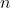
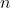

Advent of Code 2021
Is it Advent of Code time again? Well, here goes nothing. Let's see wha we can cook up.
I'm planning on completing most (all) of this year's challenges in Python, same as last year.
Table of Contents
Day 7 - The Treachery of Whales
Day 14 - Exteded Polymerization
Day 16 - Packet Decoder (In Progress)
Day 18 - Snailfish (In Progress)
Day 19 - Beacon Scanner (In Progress)
Day 20 - Trench Map (In Progress)
Day 21 - Dirac Dice (In Progress)
Day 22 - Reactor Reboot (In Progress)
Day 1 - Sonar Sweep
Part 1
I feel like it's Advent of Code tradition for me to read in the input from file (as strings) and try to do comparisons on it like ints, forgetting to cast them to intergers. Which means I was comparing textually, instead of numerically, so my answer was off by two. Absurd.
You really could do today's challenge entirely in one line, but I think it's slightly more readable broken up as I've done. Here's the complete code:
Day1/Part1.py
|
|
The offending line, where I remembered to cast the input to ints.
Part 2
Part 2 could also probably be inlined, but the list-comprehension-within-list-comprehension is, again, not the most readable thing, I think. Breaking out the three key steps (creating triples of the data, finding their sums, and finding where adjacent sums are decreasing) into 3 lines of code I think makes the solution more parsable.
Day1/Part2.py
|
|
Day 2 - Dive!
Part 1
The first part of today's challenge has us dealing with a list of things that happen sequentially (tracking the horizontal and vertical movements of our submarine), but the answer only has to do with summing them in some specific ways. This smells strongly of a 'gotcha' coming in part 2 - if we can the easy, just-sum-it-up route for part 1, we won't be able to reuse any code for part 2 when the order actually matters. But that's alright, I guess, we'll take the easy route on this one.
There's a fair amount of repetition in my list comprehensions here, but for a 7-line program I don't terribly feel like factoring it out.
Day2/Part1.py
|
|
Part 2
As expected, we're paying the (small) price for not doing the first part iteratively. That's alright, we can implement it now.
This does give me a chance to play with a new feature of Python 3.10: structural pattern matching. It's like a switch-case structure on steroids. To make sure I'm running this code in Python 3.10 specifically, I'll use pipenv to lock the version to 3.10.0 by running pipenv install --python 3.10 on the command line.
Our code is ultimately fairly simple; thankfully, I encountered no "unmatched instruction" errors, which means I parsed the input correctly.
Day2/Part2.py
|
|
Day 3 - Binary Diagnostic
Part 1
Ah, day 3 of Advent of Code, where we traditionally get into nested-processing, working with binary, and parsing numbers based on their digits. I don't know that this literally happens on day 3 every year, but it seems a familiar progression in the early days of an Advent of Code challenge. My first thought is - let's make sure we iterate through the entire input as few times as possible, something made easier by the fact that epsilon and gamma are, in some sense, complements of each other.
This one's not too hard - using a defaultdict from the collections module makes the process of adding up the number of "1"'s in all the input numbers a little cleaner.
Day3/Part1.py
|
|
Part 2
Now we're moving into the realm of processing some input data with multiple passes, while restricting which data is in each pass based on our processing of previous steps. My initial solution was a little cumbersome, but I think gets the intention accross pretty well.
Day2/Part2.py (Version 1)
|
|
We can refactor this a bit, so that the logic of reducing the list of input values is done in a function called calculateRating, which takes a list of data as well as a function. The function tells us, for a given digit position, what value at that position should be used to keep values in our data for our next round of culling.
While we could also get a little fancy and combine mostCommonDigitInPosition and leastCommonDigitInPosition, I think we'd actually be in danger of making things too concise. The difference between >= and > in each case is critical, and I think factoring that out might be too reductive.
Day3/Part2.py (Version 2)
|
|
Day 4 - Giant Squid
Part 1
Today my biggest obstacle was, as is often the case, myself trying to be too clever and concise. Today's challenge invovled parsing a somewhat more involved text file of inputs, and then further processing that input to make it into a useful data structure. Rather than load each bingo card as a 2D array, I used the input data to create two separate arrays, one indexed by rows, the other by columns, with boards at the same position representing the same board. Determining whether a board is winning (given a list of called numbers) is a simple as asking whether any of the lines (rows or columns) in that board have all their members in the called numbers.
Had I simply constructed each type of input using for loops, this would have been fairly simply, but I wanted everything packaged up nice in a list comprehension... which took me a spell to troubleshoot and get right. Ah well.
Day4/part1.py
|
|
Scroll to see complete code
Part 2
Thankfully, the infrastructure I built for part 1 of this puzzle was very useful for part to. Basically, instead of iterating through increasingly long lists of called numbers until the first winning is found, keep going until only 1 board has not won, recall that it's the winner, then keep adding called numbers until it does win.
Since all of the setup and parsing steps are the same, I'll only include the solution finding part of the code, for brevity:
Day2/Part2.py (Partial)
|
|
Day 5 - Hydrothermal Venture
Part 1
One of the gotchas on this day is making incorrect assumptions about the ordering of points in a given line. For eaxmple, for a line with endpoints (3,5) and (3,0), doing something like: for y in range(point1.y, point2.y) will generate exactly one point (3.5), because the ending y coordinate is less than the starting one. This can be fixed by either ranging over the values in a consistent direction (always from lesser to great, say) or by pre-sorting the line coordinates so that the first coordinate is always less than the second for the given axis. I chose to do the former.
Unrelatedly, I'm personally a fan of Regex101 for working out regexes. It makes the process of fleshing out a given pattern visual and intuitive, and the built-in reference guides and regex tips are invaluable.
Day5/Part1.py
|
|
Scroll to see complete code
Part 2
Having selected to iterate over the points in a line in a consistent way in the first half, I felt it might be easier to pre-process the diagonal lines in the second half. That is, I swapped the endpoints of each diagonal line as necessary to ensure the point with the lower X coordinate was first. Then, if the second y coordinate is great than the first, each time we increase the x coordinate by 1, we will by definition incrase the y coordinate by 1. If the second y coordinate is less than the first, y decreased by 1 for each increase of the x coordinate. Other than that, the processing of each point to see if it's been covered already is the same as in part one.
For brevity, I've only included the addititional processing necessary for part 2 of today's challenge.
Day5/Part2.py (Partial)
|
|
Day 6 - Lanternfish
Part 1
Part one of today's puzzle was deceptively simple. It asks the challenger to calculate the number of lanternfish present after a given number of steps of an iterative process. The way the puzzle's data is displayed in the examples presented, one might be tempted to keep the data as a long list of individual fish listed by the number of days till they next reproduce; then, for each step, iterate over the list and take the appropriate action. While this shold generate a solution, the list would quickly balloon out of the control. The key insight is that each fish that will, say, generate a new fish in 4 days, is identical to every other fish that will spawn a new fish in four days. So really, we don't need to track individual fish, just the total count of fish that will reproduce in a given number of days. For every day that passes, each of those counts of fish reduce their count by one, and we do some special accounting to the fish that are reproducing today, and iterate.
This quick and simple approach does make one worry that part 2 will require more convoluted reasoning though.
Day6/Part1.py
|
|
Part 2
Ah! We've gotten lucky here and avoided the 'gotcha' that the puzzle writer was thinking of. The second step asks to calculate the number of fish present after 256 steps; if one had taken the "process the whole list" technique in part one, one would be screwed in part two as the exponential growth of the fish population really takes off. But with a condensed, iterative process like we used in part 1, one only has to change the daysToRun value to 256, and our answer pops out in less than a quarter of a second! Excellent. I'm not even going to include the code a second time, since it is identical to part 1 except for the value of daysToRun.
Day6/Part2.py
#See Day6/Part1.py, aboveDay 7 - The Treachery of Whales
Part 1
Just to humblebrag a bit (well, really, to brag; but hey, it's my website), I solved part 1 of day's challenge in the shower. My reasoing went something like the following:
- We're looking to select a point
 that minimizes the function
that minimizes the function  , as presented in problem setup.
, as presented in problem setup. - Taking the derivative of this sum is somewhat complicated, but there's actually a better way to reason about it.
- Looked at another way, we're looking to find a point such that moving that point will only cause the total crab-distance traveled to increase; a local minimum.
- Picture our point where our crabs our converging at a point
 on the number line, with  crabs less than x and
on the number line, with  crabs less than x and  crabs great than
crabs great than 
- As we slide our alignment point along the number line in a continuous fashion, if it moves a small distance
 in, say the positive direction:
in, say the positive direction:
- We add units of additional crab travel, as we move further from the crabs at positions less than our alignment point, but
- We subtract
 as we move closer to the crabs greater than our alignment point
as we move closer to the crabs greater than our alignment point - And similarly, if is negative, we get closer to crabs and futher from crabs.
- So, if , increasing will cause the total crab distance to descrease. And if
 , decreasing with cause thte total crab distance to increase.
, decreasing with cause thte total crab distance to increase. - But recall, what we want is to find a point where neither of those things is true; where is at a mimumum, so any movement of it causes the total crab distance to incerase. This is only true where neither of the above inequalities is statisfied, i.e. when .
- Moving some terms around, we find that the total crab distance travelled is at a mimimum when
 , in other words, when the number of crabs greater than and less than the alignment point are equal. This is true when is the median of the crab points.
, in other words, when the number of crabs greater than and less than the alignment point are equal. This is true when is the median of the crab points.
All that thinking in a warm shower yeilded a very short (and working) bit of code.
Day7/Part1.py
|
|
Part 2
Sadly, my brain failed me when trying to come up with a similarly clever solution for part 2, so I ended up implementing the crab-fuel-expenditure function as described in the problem statement and iteratively increasing and decreasing the alignment point value until a minimum was found. I had the code start at the median value of the list, somewhat arbitrarily, but the code still finishes in under a quarter of a second and yields the correct answer.
I skipped a couple of obvious optimizations.
- Incrementing the position that we're currently testing the crab-distance of by only 1 unit each time probably isn't optimal (for my inputs, I had to evaluate 140 positions before finding a minimum). Perhaps some variation on Newton's method could have been used to estimate a better delta for
testVal? - There might be a more ideal value to start the search at (the mean perhaps?).
Day7/Part2.py
|
|
Scroll to see full code
Day 8 - Seven Segment Search
Part 1
Whenever the first part of an AoC challenge says For now... you know you're in for an expansion of that area of the challenge in part 2. Today's part one specifcally says to For now, focus on the easy digits, meaning the hard digits are coming right down the pipe.
Part 1 is indeed pretty easy - it breaks down to parsing the input, throwing away half of it, then counting the members of a list that have a length of 2, 3, 4, or 7 letters. I had a feeling we'd be parsing the actual digit information in part 2, so I fleshed out a bit of a dataclass to hold the input values, assuming I'd expand this in part 2.
Day8/Part1.py
|
|
Part 2
Ah, here we go, let's parse some digits. We'll need to figure out which actual segments (from 'abcdefg') are represented by which letters in the input rows.
I'll start by organizing the "hookups" (sequences of letters describing the segments lit up for a given digit) ina dictionary by the number of letters in each. This will help us tease apart which segment is which by looking at which segments are in how members members of each of thes lists.
For example, as part 1 illustrates, there is only 1 hookup with 2 segments ("1") and 1 hookup with 2 segments ("7"). The segment connected to the a illuminator is present in the "7" hookup, but not in the "1" hookup, and that's their only difference, so it's easy to find what's wired to the "a" segment.
The remainder of the deductions are slightly more complicated. For example:
- In the 3 digits with 5 segments illuminated (2, 3, 5), there are three segments common to all three (segments,
a,d, andg). - We've already found what's hooked up to segment
a, as above. So the remaining two common segments correspond to illuminatorsdandg, in some order. - The segment corresponding to
dwill be present in the single hookup with 4 illuminated sigments (which corresponds to the digit "4"); the segment corresponding togwill not. So we have established which segments should be wired now todandg.
Similar logic allows us to work out:
- Segments
eandb(both are in a single digit with 5 illuminated segments, withepresent in 2 hookups with 6 illuminated segments andbpresent in 3). - Segments
candf(both are present in two digits with 5 illuminated segments, withcpresent in 2 hookups with 6 illuminated segments andfpresent in 3).
There may be a more concise way of working this out, but this method worked out for me.
Once we know the mappings from poorly-wired-segments to true segments, we can iterate over all our input rows, transform the messed-up wirings to true wirings using this mapping, map the true mappings to digits, then sum them up.
Day8/Part2.py
|
|
Scroll to see full code
Day 9 - Smoke Basin
Part 1
Another classic evolution of the Advent of Code is working with adjacent items in a grid, with the biggest connundrum/gotcha being how to deal with the edges/corners. While the list comprehension I've put together here isn't necessarily the most readable at first glance, nor the most efficient (it generates 9 positions, of which 4 are usable), it gets the job done.
Day9/Part1.py
|
|
Part 2
The second part of today's challenge is essentially a flood-fill algorithm starting from the points we identified in part 1, ending when we reach the edges of the input data or a '9' in the data itself. By appending new points of interest to the end of the list (and only adding them if we haven't included them in the basin points already), we don't run into the issue of constantly checking points from each other.
Again, the meat of this solution is contained in a really long list comprehension. Probably not the most readable, as its checking four separate conditions to see if it should add a new point. Two have to do with generating the neighboring points, one to check if the newly checked point is a '9', and one to check if we've already included this point in the basin we're looking at.
Once we've found the sizes of all the basins, we take the three largest sizes, multiply them together, and we have our answer.
Day9/Part2.py
|
|
Scroll to see complete code
Day 10 - Syntax Scoring
Part 1
Today's part 1 is not too hard if you understand the concept of a stack - a list from which things are only added or removed from the end. Our latest character can always be an opening bracket of some kind (starting a new chunk) or a closing bracket. For a closing bracket, if it matches the last opening bracket in our stack, pop the last opening bracket off the stack and throw both of them away. If it doesn't match, we've found our first illegal character and can stop and score.
Day10/Part1.py
|
|
Scroll to see complete code
Part 2
For part 2, we'll score our incomplete lines if and only if there are no corrupt characters in the line; that is, if we reach the end of iterating through the line without hitting a corrupt character. This is what the for...else syntax achieves. We hand off these incomplete lines to the autocompleteScore method for scoring, append those scores to the list, and find the middle (median) element at the end.
Day10/Part2.py
|
|
Scroll to see complete code
Day 11 - Dumbo Octopus
Part 1
We're getting deeper and deeper into coding ideas now; today's part 1 introduces a challenge which requires is to iterate over a data set, performing a unique operation as many times as we're able until we're unable to any longer.
Once again I'm making sure of a dataclass to hold the state of each octopus, as well as lazy dictionary which allows us to treat the grid points outside of our area of interest as infinite sinks of energy.
Day11/Part1.py
|
|
Scroll to see full code
Part 2
Part 2 is very similar to part 1, except instead of tracking the total number of octopus flashes, we want to know on what step all the octopuses flash at once. The code is quite similar; I've highlighted the key changes in the following code
Day11/Part2.py
|
|
Scroll to see full code
Day 12 - Passage Pathing
Part 1
I'm not 100% proud of my solution to today's problems, though it definitely works. Mostly, the way I'm generating the possible-next routes from the currently-arrived-at-room for any given path is just a little hacky. I'm getting a list of all paths (pairs of connected caves) that include the current cave, then finding the element in that path that isn't the current cave. I have to loop through the full list of cave connections every time I want to do this, rather than generating a list of possible connections for each cave out the outset. The efficiency hit here is significant, but for the data size in the problem, it turns out to be fine.
Day12/Part1.py
|
|
Scroll to see fulll code
Part 2
For part 2, we'll need to track not only which small caves we've visited, but how many times we've visited them. So we'll need the Route object to have, not just a list of small caves, but a dict with keys as small caves and values of how many times we've been there. Then, we'll change the criteria for whether we can visit a small cave next to include the possibility of visited a small cave twice if we've yet to visit any small cave twice.
Day12/Part2.py
|
|
Scroll to see fulll code
Day 13 - Transparent Origami
Part 1
A surprisingly easy challenge for day 13, I thought. Basically, for a list of points, which have (x or y as appropriate) coodinates greater than a given number, then reflect that point over a given line. So we do a little data parsing, and we use Python sets to eliminate duplicates.
Day13/Part1.py
|
|
Scroll to see fulll code
Part 2
And, since the first part sets up the general mechanics of the problem, all we need to do for part 2 is execute all the folds, then print out the formatted output.
For brevity, here's the only change required for part 2:
Day13/Part2.py (Partial)
|
|
Day 14 - Extended Polymerization
Part 1
There were lots of jokes on /r/adventofcode today about this being a return to the lanternfish we saw on day 6. Indeed, it has a similar flavor, with an expotentially-increasing processing space that you can brute-force your way through in part 1, if you want, but that will hose you for part 2.
The brute-forcing is easy though! For each pair of letters in the current step, we add a new letter in between them based on the rules given in our input. This means our list of letters doubles in length every step, but at only 10 steps, we should be fine, right?
Day14/Part1.py
|
|
Scroll to see fulll code
Part 2
...oh, now it's 40 steps. Dang.
Thankfully, just like with those dang lanternfish, we don't actually have the store the whole list of letters between each round. The key observation is that each pair of letters geneates a unique pair of pairs of letters for the next step. E.g., for the example input, the pair NN combined with the rule NN -> C means that if there is a one pair NN at the beginning of a step, there will be one NC and one CN after that step. Or at least, one of each contributed by the NN, as there could be more CN's and NC's generated by other rules.
But, we can store the possible letter combinations in a dictionary which tracks their count, and then apply these rules at each step to get our answer. We do have to be a little clever about counting up letters at the end - if we total up the counts from each pair a given letter is in, we'll get double our answer... except for the first and last characters of our string, which will be counted exactly 1 less time. Thankfully, the first and laster letters never change under any rule, so we can note those right at the beginning of our code and account for them later.
Day14/Part2.py
|
|
Scroll to see fulll code
Day 15 - Chiton
Part 1
Dolor velit incididunt cillum incididunt sint amet reprehenderit commodo magna Lorem proident duis do.
Day14/Part1.py
|
|
Scroll to see fulll code
Part 2
Pariatur incididunt veniam tempor eiusmod sunt id labore occaecat nostrud fugiat.
At this point, I thought it might be useful to try to optimize my algorithm a little bit by tweaking my heuristic distance function.
Day14/Part2.py
|
|
Scroll to see fulll code
Day 15 - Chiton
Part 1
A pathfinding day! We'll use a modified A* pathfinding algorithm to start this one, but where the H-value of each space (the heurtistic that's usually based on cartesian distance to the endpoint) is zero.
As part of the development and debugging process, I took the opportunity to explore some terminal-based display methods, using the curses library. (Well, on windows, the windows-curses port of the same). The map-utils file and the mapDisplay class allow for single-stepping the map pathfinding while exploring the value at each space.
Day15/Part1.py
|
|
Scroll to see full code
Day15/maputils.py
|
|
Scroll to see full code
Part 2
Thankfully, the algorithm from part 1 is efficient enough to be used in the larger data size in part 2. For brevity, here's just the input-generating lines of part 2; the algorithm is the same.
Day15/Part2.py (partial)
|
|
Scroll to see full code
Day 17 - Trick Shot
-->Part 1
Part one of today's challenge can be solved by logical deduction with a minimum of coding. With the movement described, a probe moving upward will always pass though y=0 on its way back down; the fastest speed it can reach at this point is when its next step just clips the bottom of the target area, ie. when its downward speed is equal to the lower y coordinate of our input. Because the y speed increases downward by 1 unit per timestep, the highest point on its trajectory is the sum of all speeds up to and including this one. That is, our solution will be the sum of all numbers up to and including our lower-y bound.
I solved this one using the Python REPL as a calculator using sum(range(maxY)), but as an actual script it might look like:
Day17/Part1.py
|
|
Part 2
There might be a similarly clever way to reason about part 2, but I elected to just find the solutions by iterating over the (fairly reasonable) possibilities for the starting velocity. I got a little fancy with a dataclass and NamedTuple for the current location and target area, but that's not strictly necessary.
Day17/Part2.py
|
|
Scroll to see full code
-->